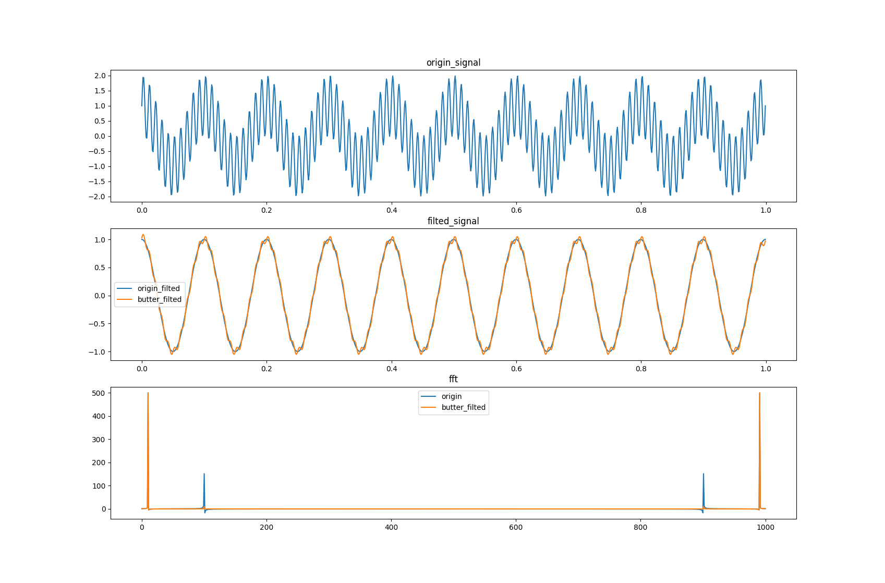

最近了解了下低通滤波在这里记录下
低通滤波器（英语：Low-pass filter）：容许低频信号通过，但减弱（或减少）频率高于截止频率的信号的通过。对于不同滤波器而言，每个频率的信号的减弱程度不同。当使用在音频应用时，它有时被称为高频剪切滤波器，或高音消除滤波器。高通滤波器则相反，而带通滤波器则是高通滤波器同低通滤波器的组合。低通滤波器在信号处理中的作用等同于其它领域如金融领域中移动平均数（moving average）所起的作用；这两个工具都通过剔除短期波动、保留长期发展趋势提供了信号的平滑形式。
此处记录两种低通滤波器的实现:一种是巴特沃斯滤波器，一种是移动平均滤波器
巴特沃斯滤波器是一种通频带之频率响应曲线平坦无纹波的信号处理滤波器。它也被称作最大平坦滤波器。这种滤波器最先由英国工程师、物理学家斯替芬·巴特沃斯在1930年发表的论文《滤波器放大器理论研究》中提出的。
特性：巴特沃斯滤波器的特点是通频带内的频率响应曲线最大限度平坦，没有纹波，而在阻频带则逐渐下降为零。在对数波特图上，从某一边界角频率开始，幅度随着角频率的增加而线性减少至负无穷。
n阶巴特沃斯低通滤波增益$G(w)$为:
\[\begin{aligned} G_n(w) = \dfrac{1}{\sqrt{1 + (w/w_c)^{2n}}} \end{aligned}\]其中:
因此实现如下:
1
2
3
4
5
6
7
8
9
10
11
def low_pass_filter_by_butter(x, butter_n, cutoff,fs=48000):
fft_x = np.fft.rfft(x) # 取fft，求得数据的频率的幅值
freqs = np.linspace(0, fs//2, len(fft_x)) # 采样率通常情况下是频率的2倍
xb = []
for i in range(len(fft_x)):
g = 1 / math.sqrt(1 + (freqs[i] / cutoff)**(2*butter_n) ) * fft_x[i] # 计算增益
xb.append(g)
filter_x = np.fft.irfft(xb, n=len(x)) # irfft还原到时域数据
return filter_x
移动平均（英语：Moving average，缩写：MA）：又称滚动平均值、滑动平均，在统计学中是一种通过创建整个数据集中不同子集的一系列平均数来分析数据点的计算方法。它也是有限脉冲响应滤波器的一种。变化包括: 简单移动平均、指数移动平均、加权移动平均，以及累积移动平均（描述如下） 给定一个数列和一个固定子集大小，移动平均数的第一个元素是由数列的初始固定子集的平均值得到的。然后通过“向前移位”修改子集，即排除序列的第一个数，并在子集中包含下一个值。
特性: 移动平均通常与时间序列数据一起使用，以消除短期波动，突出长期趋势或周期。短期和长期之间的阈值取决于应用，移动平均的参数将相应地设置。例如，它通常用于对财务数据进行技术分析，如股票价格、收益率或交易量。它也用于经济学中研究国内生产总值、就业或其他宏观经济时间序列。数学上，移动平均是卷积的一种类型，因此它可以被看作是用于信号处理的低通滤波器的一个例子。当与非时间序列数据一起使用时，移动平均滤波器的频率分量更高，但与时间没有任何特定的联系，尽管通常暗含某种排序。简单地看，它可以看作是把数据变得更平滑。
移动平均表达形式如下:
\[\begin{aligned} MA_k(n) &= \dfrac{1}{k}\sum_{i=n-k+1}^{n}X(i) \\ MA_k(n+1) &= MA_k(n) + \dfrac{1}{k}(X(n+1) - X(n-k+1)) \end{aligned}\]其中:
因此实现如下:
1
2
3
4
def running_mean(x, windowSize):
# from http://stackoverflow.com/questions/13728392/moving-average-or-running-mean
cumsum = np.cumsum(np.insert(x, 0, np.zeros(windowSize)))
return (cumsum[windowSize:] - cumsum[:-windowSize]) / windowSize
移动平均滤波器跟截止频率的关系可以参看what-is-the-cut-off-frequency-of-a-moving-average-filter此处有完整的证明。因此两者关系如下:
\[\begin{aligned} F_{co} &= \dfrac{F_{cutoff} }{fs} \qquad(1) \\ k &= \dfrac{\sqrt{0.196202 + F_{co}^{2}}}{F_{co}} \qquad(2) \end{aligned}\]其中:
因此实现如下:
1
2
3
4
5
6
7
8
def low_pass_filter_by_moving_average(x, cutoff, fs=48000):
# get window size
# from http://dsp.stackexchange.com/questions/9966/what-is-the-cut-off-frequency-of-a-moving-average-filter
freqRatio = (cutoff/fs)
N = int(math.sqrt(0.196202 + freqRatio**2)/freqRatio)
filtered = running_mean(x, N)
# filtered = np.hstack([filtered, np.zeros(N-1)])
return filtered
相比巴特沃斯滤波器，移动平均少了求傅立叶的操作，直接在原数据上操作。
测试代码如下:
1
2
3
4
5
6
7
8
9
10
11
12
13
14
15
16
17
18
19
20
21
22
23
24
25
26
27
28
29
30
31
32
33
34
35
36
37
38
39
40
41
42
43
44
45
46
47
48
49
50
51
52
53
54
55
56
57
def run():
framerate = 1000 # 假定采样率为1000
cutoff = 50 # 截止频率
base_x = np.linspace(0, 1, 1000)
x = np.sin(2*math.pi * 100*base_x) + np.cos(2*math.pi *10*base_x) # 生成频率100的正弦波和10的余弦波的叠加数据
x_10 = np.cos(2*math.pi *10*base_x)
hz = np.linspace(0, framerate, len(x)) # 频率轴
time = np.arange(0, len(x)) * (1 / framerate) # 时间轴
origin_fft_x = np.fft.fft(x) # 原始数据的fft
filter_x = low_pass_filter_by_butter(x, 4, cutoff, fs=1000) # 4阶butter过滤50hz以下的
fft_x = np.fft.fft(filter_x)
plt.subplot(311) # 绘图
plt.plot(time, x)
plt.title("origin_signal")
plt.subplot(312)
plt.plot(time, x_10, label="origin_filted")
plt.plot(time, filter_x, label="butter_filted")
plt.title("filted_signal")
plt.legend()
plt.subplot(313)
plt.plot(hz, origin_fft_x, label="origin")
plt.plot(hz, fft_x, label="butter_filted")
plt.legend()
plt.title("fft")
plt.show()
filter_x = low_pass_filter_by_moving_average(x, cutoff, fs=1000) # moving average 过滤50hz以下的
fft_x = np.fft.fft(filter_x)
plt.subplot(311)
plt.plot(time, x)
plt.title("origin_signal")
plt.subplot(312)
plt.plot(time, x_10, label="origin_filted")
plt.plot(time, filter_x, label="moving_filted")
plt.title("filted_signal")
plt.legend()
plt.subplot(313)
plt.plot(hz, origin_fft_x, label="origin")
plt.plot(hz, fft_x, label="moving_filted")
plt.legend()
plt.title("fft")
plt.show()
测试结果:
巴特沃斯:

移动平均:
使用scipy:
1
2
3
4
5
6
7
8
9
10
11
12
13
14
15
16
17
18
19
20
import scipy.signal
import numpy as np
cutoff_1, cutoff_2 = 80, 200
sr = 1000
base_x = np.linspace(0, 1, 1000)
data = np.sin(2*math.pi * 100*base_x) + np.cos(2*math.pi *10*base_x) # 生成频率100
# 带通滤波
b, a = scipy.signal.butter(4, [cutoff_1/sr*2, cutoff_2/sr*2], 'bandpass')
fix_x = scipy.signal.filtfilt(b, a, data)
# 高通滤波
sos = scipy.signal.butter(4, cutoff_1, 'hp', fs=sr, output='sos')
fix_x = scipy.signal.sosfilt(sos, data)
# 低通滤波
sos = scipy.signal.butter(4, cutoff_1, 'lp', fs=sr, output='sos')
fix_x = scipy.signal.sosfilt(sos, data)